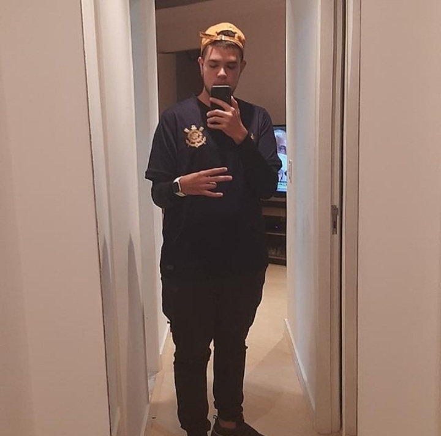

Curriculo
Dimitri Vilera Saraiva de Azevedo

informção para contato
E-mail: dimitri2055@gmail.com
Celular: (11)95028-0735
Formação Academicas
Me chamo Dimitri tenho 18 anos faço curso de tecnologia da informção no Senac Tatuape
Atualmento estou no terceiro ano do ensino médio
Já cursei informática na Eurodata e fiz 4 anos de ingles na Cultura Inglesa
Objetivos:
Estou em busca de uma empresa que me ajude a iniciar o meu histórico profissional
Experiencias/Habilidades
- Sou bom em trabalho em equipe
- Faço manutenção de desktop e notebook
- Sei criar e administrar Windows Server
- Formatação e intalação de sistemas operacionais Windows/Linux
- implantção e configuração de Firewall e Ubuntu server
- Criação de website
- Redes e infraestrutura semi enstruturada e entruturada
- Plantas de rede
- Cabeamento estruturado